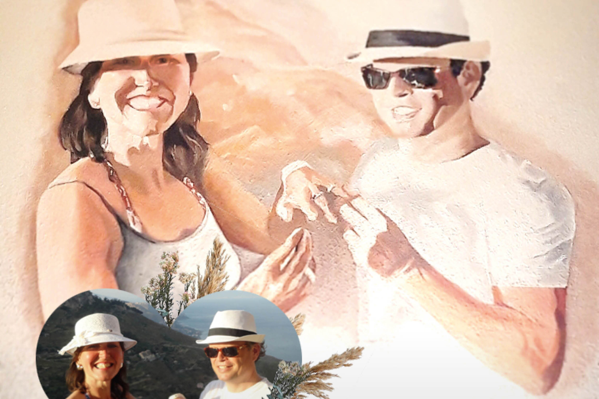
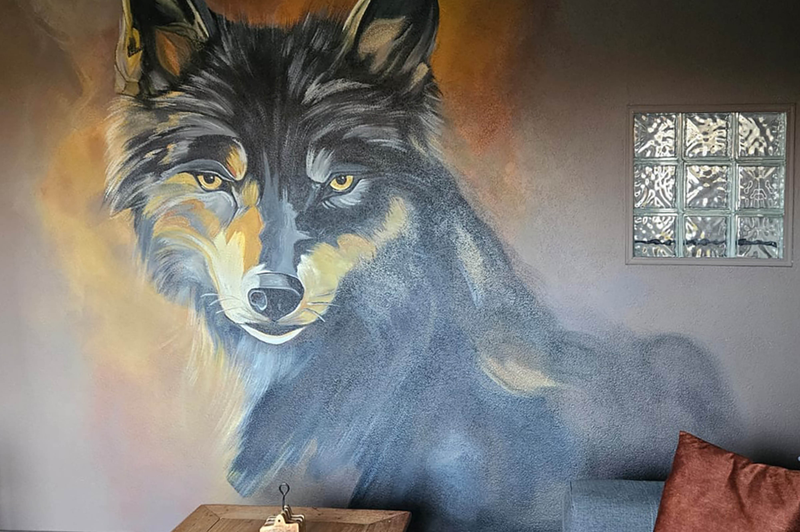
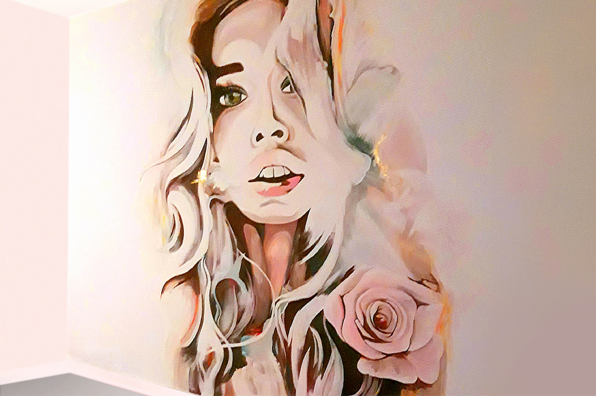
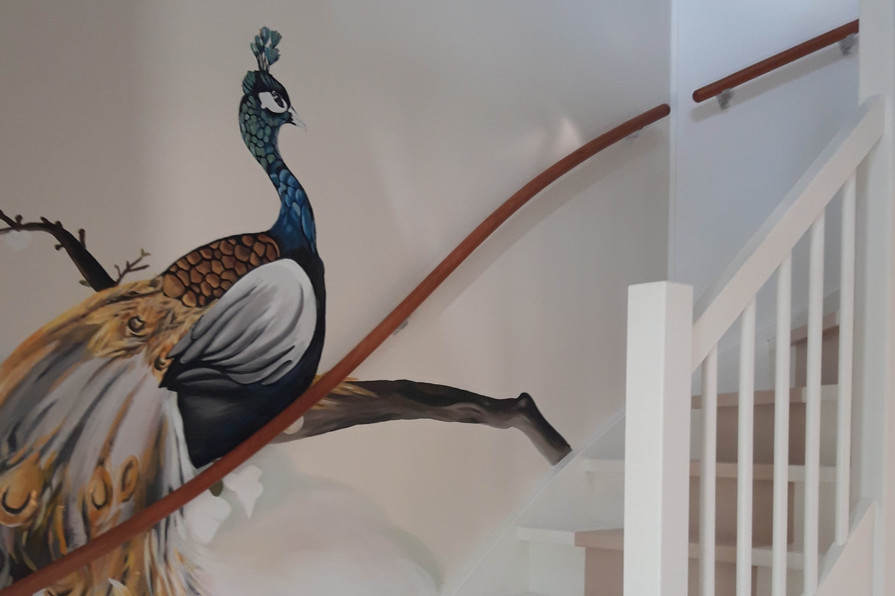

Behang
- Veel kant-en-klare dessins
- Patroon blijft herhalen
- Minder flexibel rond meubels
- Kan zichtbaar verouderen
Woonkamer muurschildering
Een handgeschilderde muur geeft je woonkamer een eigen karakter. Geen standaard print of wanddecoratie, maar een ontwerp dat wordt gemaakt voor jouw ruimte, kleuren en interieur.

Waarom een muurschildering?
Behang en muurstickers kunnen een kamer snel veranderen. Een muurschildering gaat een stap verder: het ontwerp wordt gemaakt voor precies die muur, kan rekening houden met meubels en hoeken en voelt daardoor veel meer als onderdeel van het interieur.
Van rustige botanische vormen tot een uitgesproken statement wall: de stijl, compositie en kleuren worden afgestemd op de sfeer van jouw woonkamer.
Voorbeelden
Van subtiele natuurtonen tot uitgesproken vormen en kleur: iedere muur krijgt een eigen sfeer.

Woonkamers
Woonkamers Woonkamers
WoonkamersVan subtiel tot uitgesproken
Een muurschildering in de woonkamer kan heel rustig zijn, bijvoorbeeld met organische vormen, natuur of zachte kleuren. Maar hij kan ook juist het kunstwerk worden waar de hele ruimte omheen is opgebouwd.
Het ontwerp wordt afgestemd op de schaal van de wand, de zichtlijnen in de kamer en de meubels die ervoor of ernaast staan.

Ontwerp op maat
Een muurschildering hoeft niet alleen een afbeelding óp de muur te zijn. In het ontwerp kan rekening worden gehouden met banken, kasten, doorgangen, stopcontacten en bestaande kleuren.
Daardoor voelt het ontwerp niet als iets dat later is toegevoegd, maar als een logisch onderdeel van de hele woonruimte.

Jouw idee op de muur
Stuur de afmetingen van de muur en je eerste idee via WhatsApp. Dan kijk ik graag mee naar de mogelijkheden.
Vrijblijvend contact opnemen →